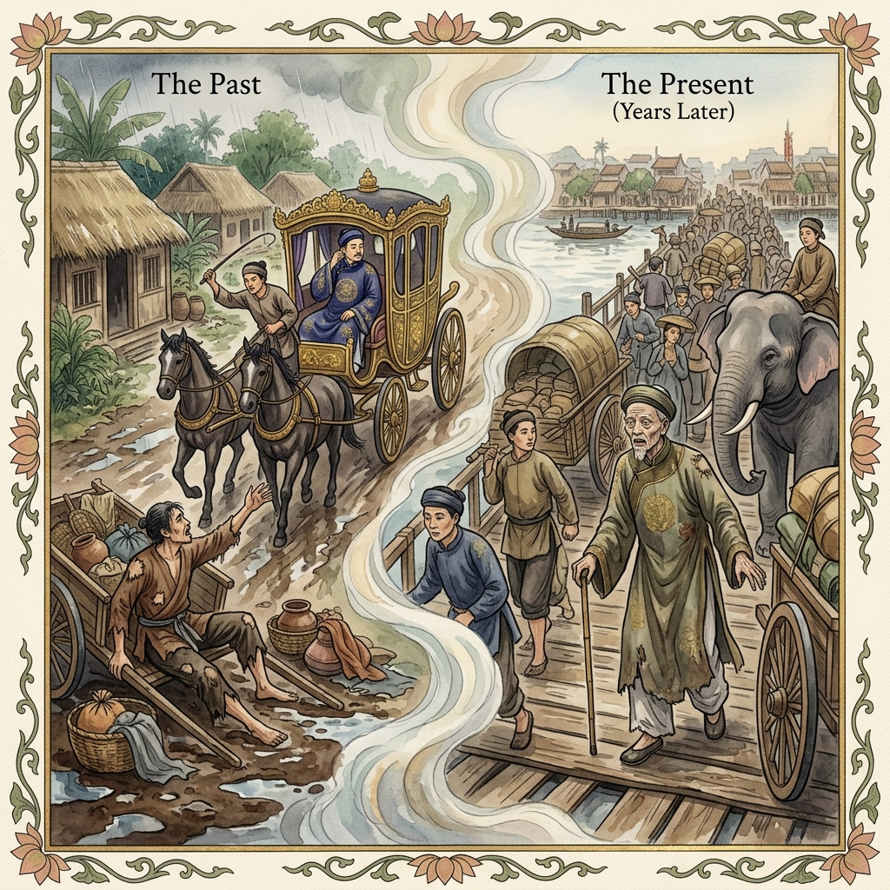
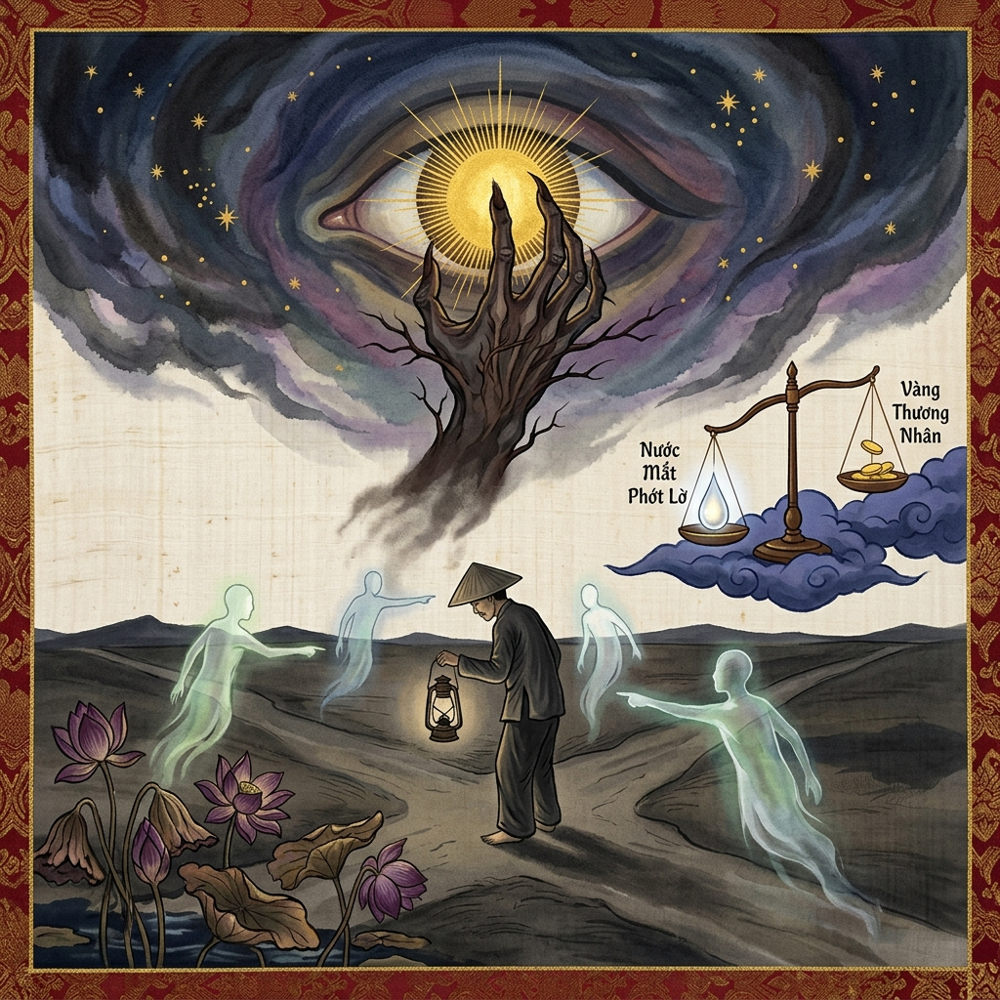
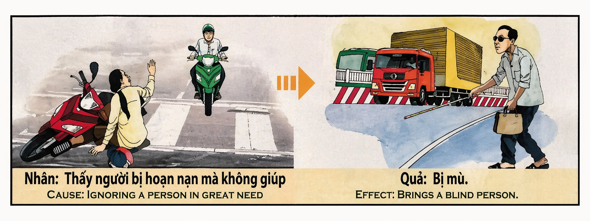

El Velo de la IndiferenciaThe Veil of IndifferenceIl Velo dell'Indifferenza冷漠之帷حجاب اللامبالاةЗавеса безразличияDer Schleier der GleichgültigkeitLe Voile de l'Indifférence無関心のベールO Véu da IndiferençaBức Màn Vô Cảm
La visión no es un atributo exclusivo de los ojos físicos, sino una luz que emana de la compasión. Quien elige cerrar su mirada ante el sufrimiento ajeno por conveniencia, prisa o egoísmo, está apagando la lámpara que ilumina su propio destino. El karma de ignorar a quien necesita auxilio se manifiesta como una ceguera del alma y, a menudo, del cuerpo: un estado de oscuridad donde el camino se pierde porque un día decidimos que el dolor de nuestro hermano no era de nuestra incumbencia. Vision is not an exclusive attribute of physical eyes, but a light that emanates from compassion. He who chooses to close his gaze to others' suffering for convenience, haste, or selfishness, is extinguishing the lamp that illuminates his own destiny. The karma of ignoring those in need of help manifests as blindness of the soul and, often, of the body: a state of darkness where the path is lost because one day we decided that our brother's pain was none of our business. La visione non è un attributo esclusivo degli occhi fisici, ma una luce che emana dalla compassione. Chi sceglie di chiudere lo sguardo davanti alla sofferenza altrui per convenienza o egoismo, sta spegnendo la lampada che illumina il proprio destino. Il karma di ignorare chi ha bisogno di aiuto si manifesta come una cecità dell'anima. 洞察力并非肉眼的专属特质，而是源于慈悲的光芒。若因贪图便利、匆忙或自私而选择对他人之苦视而不见，便是亲手熄灭了照亮自己前程的灯火。无视危难者的业力，多年后会化作灵魂甚至肉体的黑暗：由于曾经认定他人的痛苦与己无关，自此人生的道路也将迷失在黑暗之中。 البصيرة ليست مجرد صفة للعينين الجسديتين، بل هي نور ينبع من الرحمة. من يختار غض بصره عن معاناة الآخرين بدافع الراحة أو العجلة أو الأنانية، فإنه يطفئ المصباح الذي ينير قدره. كارما تجاهل من يحتاج إلى المساعدة تظهر كعمى في الروح، وغالباً في الجسد: حالة من الظلام يضيع فيها الطريق لأننا قررنا يوماً أن ألم أخينا ليس من شأننا. Зрение — это не только физическая способность глаз, но и свет, исходящий от сострадания. Тот, кто решает закрыть глаза на чужие страдания ради удобства или эгоизма, гасит лампу, освещающую его собственный путь. Карма игнорирования нуждающихся проявляется как слепота души и тела: тьма, в которой теряется путь. Sehkraft ist keine exklusive Eigenschaft der physischen Augen, sondern ein Licht, das aus dem Mitgefühl kommt. Wer sich entscheidet, vor dem Leid anderer aus Bequemlichkeit oder Egoismus den Blick zu verschließen, löscht die Lampe aus, die sein eigenes Schicksal erhellt. Das Karma des Ignorierens von Hilfsbedürftigen manifestiert sich als Blindheit der Seele und des Körpers. La vision n'est pas un attribut exclusif des yeux physiques, mais une lumière qui émane de la compassion. Celui qui choisit de fermer les yeux sur la souffrance d'autrui par commodité ou égoïsme, éteint la lampe qui illumine son propre destin. Le karma de l'indifférence envers ceux qui ont besoin d'aide se manifeste comme une cécité de l'âme et du corps. 視力とは物理的な目だけの属性ではなく、慈悲から放たれる光です。利便性や急ぎ、あるいは身勝手さから他者の苦しみに対して目を背ける者は、自らの運命を照らす灯火を自ら消しているのです。助けを必要とする者を無視したカルマは、魂の、そしてしばしば肉体の盲目として現れます。 A visão não é um atributo exclusivo dos olhos físicos, mas uma luz que emana da compaixão. Quem escolhe fechar o olhar perante o sofrimento alheio por conveniência, pressa ou egoísmo, está a apagar a lâmpada que ilumina o seu próprio destino. O karma de ignorar quem precisa de auxílio manifesta-se como uma cegueira da alma e do corpo. Tầm nhìn không phải là đặc ân duy nhất của đôi mắt, mà là ánh sáng tỏa ra từ lòng trắc ẩn. Kẻ chọn cách nhắm mắt trước nỗi khổ của người khác vì tư lợi hay ích kỷ, chính là đang tự dập tắt ngọn đèn soi sáng định mệnh của chính mình. Nghiệp quả của việc phớt lờ người hoạn nạn sẽ dẫn đến sự mù lòa của tâm hồn và thể xác.
Cada ser humano que se cruza en nuestro camino en un momento de crisis es un mensajero del destino enviado para poner a prueba la salud de nuestro espíritu. La compasión no es un sentimiento opcional, sino el pegamento sagrado que sostiene la realidad. Cuando vemos un accidente, un corazón roto o una mano extendida en la desesperación y decidimos "no ver", estamos fracturando nuestra propia integridad. El universo registra ese momento en que nuestro corazón se endureció para proteger nuestra comodidad inmediata.
La ceguera física, en el lenguaje profundo del karma, suele ser el reflejo de una ceguera previa en el corazón. Si un hombre ve a otro herido en el camino y acelera su paso para no retrasar sus negocios, está declarando que su oro es más importante que la vida. Esa declaración se convierte en una sombra que, con el tiempo, cubre sus pupilas. No se trata de un castigo cruel, sino de una consecuencia vibracional: si no usas tus ojos para reconocer el valor de la vida en otros, pierdes la facultad de percibir la luz en tu propia existencia.
Para sanar este karma, se requiere abrir los ojos del alma mediante el servicio abnegado. Debemos aprender a ver a los demás no como obstáculos o instrumentos, sino como extensiones de nosotros mismos. Solo cuando nos detenemos a recoger al caído, empezamos a limpiar el velo que nubla nuestra visión futura. La verdadera claridad no consiste en ver formas y colores, sino en reconocer la divinidad en cada par de ojos que solicita nuestra ayuda.
Every human being who crosses our path in a moment of crisis is a messenger of destiny sent to test the health of our spirit. Compassion is not an optional feeling, but the sacred glue that holds reality together. When we see an accident, a broken heart, or a hand extended in despair and decide "not to see," we are fracturing our own integrity. The universe records that moment when our heart hardened to protect our immediate comfort.
Physical blindness, in the deep language of karma, is often the reflection of a prior blindness in the heart. If a man sees another wounded on the road and quickens his pace to not delay his business, he is declaring that his gold is more important than life. That declaration becomes a shadow that, over time, covers his pupils. It is not a cruel punishment, but a vibrational consequence: if you do not use your eyes to recognize the value of life in others, you lose the faculty to perceive the light in your own existence.
To heal this karma, one must open the eyes of the soul through selfless service. We must learn to see others not as obstacles or instruments, but as extensions of ourselves. Only when we stop to pick up the fallen do we begin to clear the veil that clouds our future vision. True clarity does not consist in seeing shapes and colors, but in recognizing the divinity in every pair of eyes that asks for our help.
Ogni essere umano che incrocia il nostro cammino in un momento di crisi è un messaggero del destino inviato per mettere alla prova la salute del nostro spirito. La compassione non è un sentimento opzionale, ma il collante sacro che sostiene la realtà. Quando vediamo un incidente o una mano tesa nella disperazione e decidiamo di "non vedere", stiamo fratturando la nostra stessa integrità. L'universo registra quel momento in cui il nostro cuore si è indurito.
La cecità fisica, nel linguaggio profondo del karma, è spesso il riflesso di una precedente cecità del cuore. Se un uomo vede un altro ferito sulla strada e accelera il passo per non ritardare i suoi affari, dichiara che il suo oro è più importante della vita. Quella dichiarazione diventa un'ombra che, col tempo, copre le sue pupille. Se non usi i tuoi occhi per riconoscere il valore della vita negli altri, perdi la facoltà di percepire la luce nella tua esistenza.
Per guarire questo karma, è necessario aprire gli occhi dell'anima attraverso il servizio disinteressato. Dobbiamo imparare a vedere gli altri non come ostacoli, ma come estensioni di noi stessi. Solo quando ci fermiamo a raccogliere chi è caduto, iniziamo a pulire il velo che offusca la nostra visione futura. La vera chiarezza consiste nel riconoscere la divinità in ogni paio di occhi che richiede il nostro aiuto.
在危机时刻与我们擦肩而过的每一个人，都是命运派来测试我们灵魂健康的使者。慈悲并非可有可无的情感，而是维系现实的神圣纽带。当我们目睹意外、破碎的心或绝望中伸出的手，却选择“视而不见”时，我们正在粉碎自己的完整性。宇宙记录下了那一刻——为了保护眼前的舒适，我们的心变得坚硬如石。
在业力的深层语言中，肉体的盲目往往是心灵早已失明的反映。如果一个人看到他人受伤倒地，却为了不耽误生意而加快脚步，他便是在宣称黄金比生命更重要。这一宣言会化作阴影，随着时间的推移覆盖他的瞳孔。这并非残忍的惩罚，而是振动的必然结果：如果你不用眼睛去认可他人生命的价值，你也将失去感知自己生命之光的能力。
要化解这一业力，必须通过无私的奉献开启灵魂之眼。我们必须学会不把他人视为障碍或工具，而是视为自我的延伸。只有当我们停下脚步扶起跌倒者时，我们才开始清除笼罩未来视线的迷雾。真正的明晰不在于分辨形状和颜色，而在于认出每一双求助眼睛背后的神性。
كل إنسان يتقاطع طريقه معنا في لحظة أزمة هو رسول من القدر أُرسل لاختبار صحة روحنا. الرحمة ليست شعوراً اختيارياً، بل هي الغراء المقدس الذي يمسك الواقع ببعضه. عندما نرى حادثاً أو قلباً مكسوراً أو يداً ممدودة في يأس ونقرر "ألا نرى"، فإننا نحطم نزاهتنا. يسجل الكون تلك اللحظة التي قسى فيها قلبنا لحماية راحتنا المباشرة.
العمى الجسدي، في لغة الكارما العميقة، غالباً ما يكون انعكاساً لعمى سابق في القلب. إذا رأى رجل شخصاً جريحاً في الطريق وأسرع الخطى لكي لا يعطل أعماله، فإنه يعلن أن ذهبه أهم من الحياة. هذا الإعلان يصبح ظلاً يغطي بؤبؤ عينيه مع مرور الوقت. ليس هذا عقاباً قاسياً، بل هو نتيجة اهتزازية: إذا لم تستخدم عينيك للاعتراف بقيمة الحياة في الآخرين، فستفقد القدرة على إدراك النور في وجودك الخاص.
لشفاء هذه الكارما، يتطلب الأمر فتح عيون الروح من خلال الخدمة المتفانية. يجب أن نتعلم رؤية الآخرين ليس كعقبات أو أدوات، بل كامتداد لأنفسنا. فقط عندما نتوقف لنلتقط الساقط، نبدأ في تنظيف الحجاب الذي يغيم رؤيتنا المستقبلية. الوضوح الحقيقي لا يتمثل في رؤية الأشكال والألوان، بل في التعرف على الألوهية في كل زوج من العيون يطلب مساعدتنا.
Каждый человек, встречающийся на нашем пути в момент кризиса, — это посланник судьбы, посланный испытать наш дух. Сострадание — это не факультативное чувство, а священный клей, удерживающий реальность. Когда мы видим несчастный случай или руку, протянутую в отчаянии, и решаем «не видеть», мы разрушаем собственную целостность. Вселенная фиксирует тот миг, когда наше сердце ожесточилось ради минутного комфорта.
Физическая слепота в глубоком понимании кармы часто является отражением слепоты сердца. Если человек видит раненого и ускоряет шаг, чтобы не опоздать на сделку, он заявляет, что золото важнее жизни. Это заявление становится тенью, которая со временем застилает его зрачки. Это не жестокое наказание, а вибрационное последствие: если вы не используете глаза, чтобы признать ценность жизни в других, вы теряете способность видеть свет в собственном существовании.
Чтобы исцелить эту карму, нужно открыть глаза души через бескорыстное служение. Мы должны научиться видеть в других не препятствия, а продолжение самих себя. Только когда мы останавливаемся, чтобы поднять упавшего, мы начинаем очищать завесу, затуманивающую наше будущее. Истинная ясность — это не различение форм и цветов, а узнавание божественного в каждой паре глаз, просящих о помощи.
Jeder Mensch, der unseren Weg in einem Krisenmoment kreuzt, ist ein Boten des Schicksals, der gesandt wurde, um die Gesundheit unseres Geistes zu prüfen. Mitgefühl ist kein optionales Gefühl, sondern der heilige Klebstoff, der die Realität zusammenhält. Wenn wir einen Unfall oder eine verzweifelt ausgestreckte Hand sehen und uns entscheiden, „nicht hinzusehen“, verletzen wir unsere eigene Integrität. Das Universum zeichnet den Moment auf, in dem unser Herz hart wurde.
Körperliche Blindheit ist in der tiefen Sprache des Karma oft das Spiegelbild einer vorherigen Blindheit im Herzen. Wenn ein Mann einen Verletzten sieht und weitergeht, um seine Geschäfte nicht zu verzögern, erklärt er, dass sein Gold wichtiger ist als das Leben. Diese Erklärung wird zu einem Schatten, der mit der Zeit seine Pupillen bedeckt. Wenn du deine Augen nicht benutzt, um den Wert des Lebens in anderen zu erkennen, verlierst du die Fähigkeit, das Licht in deiner eigenen Existenz wahrzunehmen.
Um dieses Karma zu heilen, müssen die Augen der Seele durch selbstlosen Dienst geöffnet werden. Wir müssen lernen, andere nicht als Hindernisse, sondern als Erweiterungen unserer selbst zu sehen. Erst wenn wir anhalten, um dem Gefallenen aufzuhelfen, beginnen wir, den Schleier zu lüften, der unsere künftige Sicht trübt. Wahre Klarheit besteht darin, das Göttliche in jedem Augenpaar zu erkennen, das um Hilfe bittet.
Chaque être humain qui croise notre chemin dans un moment de crise est un messager du destin envoyé pour tester la santé de notre esprit. La compassion n'est pas un sentiment facultatif, mais le ciment sacré qui maintient la réalité. Quand nous voyons un accident ou une main tendue dans le désespoir et que nous décidons de « ne pas voir », nous fracturons notre propre intégrité. L'univers enregistre ce moment où notre cœur s'est endurci pour protéger notre confort immédiat.
La cécité physique est souvent le reflet d'une cécité préalable du cœur. Si un homme voit un blessé et presse le pas pour ne pas retarder ses affaires, il déclare que son or est plus important que la vie. Cette déclaration devient une ombre qui, avec le temps, couvre ses pupilles. Si vous n'utilisez pas vos yeux pour reconnaître la valeur de la vie chez les autres, vous perdez la faculté de percevoir la lumière dans votre propre existence.
Pour guérir ce karma, il faut ouvrir les yeux de l'âme par le service désintéressé. Nous devons apprendre à voir les autres non comme des obstacles, mais como des extensions de nous-mêmes. Ce n'est qu'en s'arrêtant pour relever celui qui est tombé que nous commençons à dissiper le voile qui obscurcit notre vision future. La vraie clarté consiste à reconnaître la divinité dans chaque regard qui sollicite notre aide.
危機の瞬間に私たちの道を横切るすべての人間は、精神の健全さを試すために送られた運命の使者です。慈悲は選択肢としての感情ではなく、現実を繋ぎ止める聖なる絆です。事故や絶望の中で差し伸べられた手を見て「見ない」と決める時、私たちは自らの誠実さを壊しています。宇宙は、当座の快適さを守るために心が硬くなったその瞬間を記録しています。
カルマの深い意味において、肉体的な盲目はしばしば心の盲目の反映です。道端で負傷した人を見かけ、仕事に遅れないようにと足を早めるなら、その人は命よりも金の方が大切だと宣言しているのです。その宣言は影となり、時を経て瞳を覆います。他者の命の価値を認めるために目を使わないなら、自らの存在の中に光を感じ取る能力も失われるのです。
このカルマを癒すには、無私の奉仕を通じて魂の目を開く必要があります。他者を障害物や道具としてではなく、自分自身の延長として見ることを学ばなければなりません。倒れた人を助けるために立ち止まる時初めて、将来の視界を遮る霧が晴れ始めます。真の明晰さとは形や色を見ることではなく、助けを求めるすべての瞳の中に神性を見出すことなのです。
Cada ser humano que se cruza no nosso caminho num momento de crise é um mensageiro do destino enviado para testar a saúde do nosso espírito. A compaixão não é um sentimento opcional, mas o elo sagrado que sustenta a realidade. Quando vemos um acidente ou uma mão estendida no desespero e decidimos "não ver", estamos a fracturar a nossa própria integridade. O universo regista esse momento em que o nosso coração endureceu.
A cegueira física é muitas vezes o reflexo de uma cegueira prévia no coração. Se um homem vê outro ferido no caminho e apressa o passo para não atrasar os seus negócios, está a declarar que o seu ouro é mais importante que a vida. Essa declaração torna-se uma sombra que, com o tempo, cobre as suas pupilas. Se não usas os teus olhos para reconhecer o valor da vida nos outros, perdes a faculdade de perceber a luz na tua própria existência.
Para curar este karma, é necessário abrir os olhos da alma através do serviço altruísta. Devemos aprender a ver os outros não como obstáculos, mas como extensões de nós mesmos. Só quando paramos para recolher o caído, começamos a limpar o véu que nubla a nossa visão futura. A verdadeira clareza consiste em reconhecer a divindade em cada par de olhos que solicita a nossa ajuda.
Mỗi con người ta gặp trong lúc hoạn nạn đều là một sứ giả của định mệnh phái đến để thử thách lòng nhân ái trong ta. Lòng trắc ẩn không phải là một cảm xúc tự chọn, mà là sợi dây thiêng liêng gắn kết thực tại. Khi ta chứng kiến một tai nạn hay một bàn tay tuyệt vọng giơ ra mà ta chọn cách "không thấy", ta đang tự làm rạn nứt chính sự liêm chính của mình. Vũ trụ ghi lại khoảnh khắc trái tim ta chai sạn chỉ để bảo vệ sự thoải mái tức thời.
Sự mù lòa về thể xác, trong ngôn ngữ sâu sắc của nhân quả, thường là phản chiếu của sự mù lòa trong tâm hồn trước đó. Nếu một người thấy kẻ khác bị thương mà vẫn rồ ga phóng đi để không lỡ việc làm ăn, kẻ đó đang tuyên bố rằng tiền bạc quan trọng hơn mạng người. Tuyên bố đó sẽ trở thành bóng tối che phủ đồng tử của anh ta theo thời gian. Đây không phải hình phạt tàn ác mà là hệ quả của rung động: nếu anh không dùng mắt để nhận ra giá trị sự sống của người khác, anh sẽ mất đi khả năng cảm nhận ánh sáng trong chính cuộc đời mình.
Để hóa giải nghiệp quả này, ta cần mở đôi mắt tâm hồn thông qua sự phụng sự vô vị lợi. Ta phải học cách nhìn nhận người khác không phải là chướng ngại vật hay công cụ, mà là một phần của chính mình. Chỉ khi ta dừng lại để nâng đỡ kẻ sa cơ, ta mới bắt đầu xóa tan bức màn che mờ tầm nhìn tương lai. Sự sáng suốt thực sự không phải là nhìn thấy hình hài hay màu sắc, mà là nhận ra Phật tính trong mỗi đôi mắt đang khẩn thiết cầu cứu.
El Mercader de las Perlas Negras
The Merchant of Black Pearls
Thương Nhân Ngọc Trai Đen
En la próspera ciudad de Hội An, vivía un mercader llamado Bao, cuya fortuna crecía tan rápido como su indiferencia. Bao comerciaba con perlas negras, y decía que su visión era tan aguda que podía distinguir un defecto en una joya a cien pasos. Un día de tormenta, mientras Bao viajaba en su carruaje hacia una subasta importante, vio a un campesino atrapado bajo su carreta volcada en el fango. El hombre, herido y bajo la lluvia, gritó: "¡Por piedad, ayúdeme! Mi pierna está atrapada".
Bao miró el reloj de arena y luego su fina túnica de seda. Pensó en el precio que alcanzarían sus perlas si llegaba el primero. "Si me detengo, el barro arruinará mi mercancía y perderé el negocio", se dijo. Miró fijamente a los ojos del hombre, que suplicaban vida, y luego, con una frialdad glacial, volvió la cabeza hacia el otro lado y ordenó a su cochero: "¡Sigue adelante! Mi tiempo vale más que ese barro". Cerró las cortinas de seda de su carruaje para no ver la agonía que dejaba atrás.
Los años convirtieron a Bao en el hombre más rico de la provincia. Sus perlas eran famosas en todo el imperio. Sin embargo, una mañana, Bao notó una pequeña mota negra en el centro de su visión. No era polvo, ni cansancio. Día tras día, la mancha creció como una tinta derramada sobre el mundo. Los mejores médicos de la corte examinaron sus ojos, pero no encontraron daño alguno. "Tus ojos están sanos, Bao", decían, "pero tu cerebro ha decidido dejar de ver". En menos de un año, el mercader quedó sumido en la oscuridad total.
En su eterna noche, Bao comenzó a oler el barro y a sentir el frío de la lluvia que cayó aquel día lejano. Cada vez que intentaba dormir, veía con absoluta claridad —en la pantalla de su mente— los ojos del campesino suplicando ayuda. Comprendió con horror que su ceguera no era una enfermedad, sino el espejo de aquel momento en que eligió ser ciego al dolor ajeno. "Cerré mis ojos para salvar mis perlas", gritó en la soledad de su mansión, "y ahora las perlas han devorado mi luz".
Desesperado, Bao vendió todas sus posesiones. Construyó una casa de refugio en el mismo camino donde aquel hombre había caído. Contrató a los mejores cirujanos para sanar a los pobres de la vista y él mismo, guiado por un lazarillo, pasaba sus días sentado a la orilla del camino, esperando. No esperaba recuperar su vista, sino la oportunidad de que alguien necesitara su mano para cruzar. Se convirtió en el "Ciego que Ve", pues su oído y su corazón se agudizaron para detectar el más leve suspiro de necesidad.
Una tarde, un anciano con una cojera evidente se detuvo frente a Bao. "Usted no me reconoce", dijo el viajero con voz suave, "pero yo soy el hombre que usted dejó bajo la carreta hace veinte años. Un monje me salvó, pero perdí mi pierna. Vine a ver qué había sido del mercader de las perlas". Bao cayó de rodillas, sollozando, y besó las manos callosas del campesino, pidiendo un perdón que sentía que no merecía. El campesino lo levantó y le dijo: "Tu corazón ha llorado suficiente. El odio es una carga que yo tampoco quiero llevar. Te perdono".
En ese instante, una pequeña chispa de luz atravesó las tinieblas de Bao. No recuperó la vista para ver los colores de las flores o el brillo del oro, pero pudo ver la silueta del hombre frente a él rodeada de un halo de paz. Comprendió que su Ikigai no era poseer tesoros, sino ser el faro que guía a otros en su oscuridad. Bao pasó el resto de sus días enseñando que el único ojo que realmente importa es aquel que reconoce a un hermano en cada extraño herido.
La enseñanza que Bao dejó escrita antes de morir fue: "Si cierras tus ojos ante el hombre que cae, el universo cerrará los suyos ante tu camino. No hay noche más oscura que la que nosotros mismos fabricamos con nuestra indiferencia. Ayuda a ver al que no puede, y quizás el cielo te permita ver lo que realmente importa".
In the prosperous city of Hội An, there lived a merchant named Bao, whose fortune grew as fast as his indifference. Bao traded in black pearls, and he said his vision was so sharp that he could distinguish a flaw in a gem at a hundred paces. One stormy day, as Bao traveled in his carriage toward an important auction, he saw a peasant trapped under his overturned cart in the mud. The man, injured and in the rain, cried out: "Have mercy, help me! My leg is trapped."
Bao looked at the hourglass and then at his fine silk robe. He thought about the price his pearls would fetch if he arrived first. "If I stop, the mud will ruin my merchandise and I'll lose the deal," he said to himself. He stared into the man's eyes, which pleaded for life, and then, with icy coldness, turned his head away and ordered his coachman: "Drive on! My time is worth more than that mud." He closed the silk curtains of his carriage so as not to see the agony he left behind.
Years turned Bao into the richest man in the province. His pearls were famous throughout the empire. However, one morning, Bao noticed a small black speck in the center of his vision. It wasn't dust, nor tiredness. Day after day, the spot grew like spilled ink over the world. The best court physicians examined his eyes, but found no damage. "Your eyes are healthy, Bao," they said, "but your brain has decided to stop seeing." In less than a year, the merchant was plunged into total darkness.
In his eternal night, Bao began to smell the mud and feel the cold of the rain that fell that distant day. Every time he tried to sleep, he saw with absolute clarity—in the screen of his mind—the peasant's eyes pleading for help. He realized with horror that his blindness was not a disease, but the mirror of that moment when he chose to be blind to others' pain. "I closed my eyes to save my pearls," he cried in the solitude of his mansion, "and now the pearls have devoured my light."
Desperate, Bao sold all his possessions. He built a shelter on the same road where that man had fallen. He hired the best surgeons to heal the poor's eyesight, and he himself, guided by a companion, spent his days sitting by the roadside, waiting. He wasn't waiting to regain his sight, but for the chance that someone would need his hand to cross. He became the "Blind Man who Sees," as his hearing and heart sharpened to detect the slightest sigh of need.
One afternoon, an old man with a visible limp stopped in front of Bao. "You don't recognize me," the traveler said in a soft voice, "but I am the man you left under the cart twenty years ago. A monk saved me, but I lost my leg. I came to see what had become of the pearl merchant." Bao fell to his knees, sobbing, and kissed the peasant's calloused hands, asking for a forgiveness he felt he didn't deserve. The peasant raised him up and said: "Your heart has wept enough. Hatred is a burden I don't want to carry either. I forgive you."
In that instant, a small spark of light pierced Bao's darkness. He did not regain his sight to see the colors of flowers or the glint of gold, but he could see the silhouette of the man in front of him surrounded by a halo of peace. He understood that his Ikigai was not possessing treasures, but being the beacon that guides others in their darkness. Bao spent the rest of his days teaching that the only eye that really matters is the one that recognizes a brother in every wounded stranger.
The teaching Bao left written was: "If you close your eyes to the man who falls, the universe will close its own to your path. There is no night darker than the one we ourselves manufacture with our indifference. Help the one who cannot see, and perhaps heaven will allow you to see what really matters."
Nella prospera città di Hội An viveva un mercante di nome Bao, la cui fortuna cresceva quanto la sua indifferenza. Bao commerciava perle nere e si vantava di avere una vista così acuta da distinguere un difetto in una gemma a cento passi. Un giorno di tempesta, mentre Bao viaggiava verso un'asta importante, vide un contadino intrappolato sotto il suo carro rovesciato nel fango. L'uomo, ferito, gridò: "Per pietà, aiutatemi! La mia gamba è bloccata".
Bao guardò la clessidra e poi la sua raffinata tunica di seta. Pensò al prezzo che avrebbero raggiunto le sue perle se fosse arrivato per primo. "Se mi fermo, il fango rovinerà la mia merce e perderò l'affare", si disse. Guardò fisso negli occhi l'uomo che supplicava vita, e poi, con una freddezza glaciale, voltò la testa dall'altra parte e ordinò al suo cocchiere: "Vai avanti! Il mio tempo vale più di quel fango". Chiuse le tende di seta della sua carrozza per non vedere l'agonia che lasciava dietro di sé.
Gli anni fecero di Bao l'uomo più ricco della provincia. Tuttavia, una mattina, Bao notò una piccola macchia nera al centro della sua visione. Giorno dopo giorno, la macchia crebbe come inchiostro versato sul mondo. I migliori medici esaminarono i suoi occhi, ma non trovarono alcun danno. "I tuoi occhi sono sani, Bao", dicevano, "ma il tuo cervello ha deciso di smettere di vedere". In meno di un anno, il mercante sprofondò nell'oscurità totale.
Nella sua notte eterna, Bao cominciò a sentire l'odore del fango e il freddo della pioggia di quel giorno lontano. Ogni volta che cercava di dormire, vedeva con assoluta chiarezza — nello schermo della sua mente — gli occhi del contadino che supplicava aiuto. Comprese con orrore che la sua cecità non era una malattia, ma lo specchio di quel momento in cui scelse di essere cieco al dolore altrui. "Chiusi i miei occhi per salvare le mie perle", gridò, "e ora le perle hanno divorato la mia luce".
Disperato, Bao vendette tutti i suoi beni. Costruì un rifugio sulla stessa strada dove quell'uomo era caduto. Assunse i migliori chirurghi per curare la vista dei poveri e lui stesso passava le sue giornate seduto sul ciglio della strada, aspettando. Non aspettava di recuperare la vista, ma l'opportunità che qualcuno avesse bisogno della sua mano per attraversare. Divenne il "Cieco che Vede", poiché il suo udito e il suo cuore si affinarono per rilevare il più lieve sospiro di bisogno.
Un pomeriggio, un anziano zoppo si fermò davanti a Bao. "Lei non mi riconosce", disse il viaggiatore, "ma io sono l'uomo che lei lasciò sotto il carro vent'anni fa. Un monaco mi salvò, ma persi la gamba. Sono venuto a vedere che ne era stato del mercante di perle". Bao cadde in ginocchio, singhiozzando, e baciò le mani callose del contadino, chiedendo un perdono che sentiva di non meritare. Il contadino lo sollevò e disse: "Il tuo cuore ha pianto a sufficienza. L'odio è un peso che non voglio portare nemmeno io. Ti perdono".
In quell'istante, una piccola scintilla di luce attraversò le tenebre di Bao. Non recuperò la vista per vedere i colori dei fiori, ma poté vedere la sagoma dell'uomo davanti a lui circondata da un alone di pace. Capì che il suo Ikigai non era possedere tesori, ma essere il faro che guida gli altri. Bao passò il resto dei suoi giorni insegnando che l'unico occhio che conta davvero è quello che riconosce un fratello in ogni straniero ferito.
L'insegnamento che Bao lasciò scritto fu: "Se chiudi i tuoi occhi davanti all'uomo che cade, l'universo chiuderà i suoi davanti al tuo cammino. Non c'è notte più oscura di quella che fabbrichiamo con la nostra indifferenza. Aiuta a vedere chi non può, e forse il cielo ti permetterà di vedere ciò che conta davvero".
在繁荣的会安城，住着一个名叫阿宝的商人，他的财富增长得和他的冷漠一样快。阿宝经营黑珍珠生意，他常说自己的眼光锐利到能在百步之外看出一颗宝石的瑕疵。一个暴风雨之日，当阿宝坐着马车赶往一场重要的拍卖会时，他看到一个农民被翻倒在泥泞中的马车压住。那人受伤淋雨，高喊着：“求求你，救救我！我的腿被压住了。”
阿宝看了看沙漏，又看了看自己精美的丝绸长袍。他想到如果自己第一个赶到，珍珠能卖出的高价。“如果我停下来，泥水会毁了我的货物，我会丢掉这桩生意，”他自言自语道。他直视着那双恳求生命的眼睛，然后以一种冰冷的残酷转过头去，命令车夫：“继续走！我的时间比那堆烂泥更值钱。”他拉上马车的丝绸帘子，不去看身后留下的痛苦。
岁月让阿宝成为了省里最富有的人。然而，一个清晨，阿宝注意到他的视野中心出现了一个黑色的小点。日复一日，那黑点像泼在世界上的墨水一样扩大。最好的医生检查了他的眼睛，却没发现任何损伤。“阿宝，你的眼睛很健康，”他们说，“但你的大脑决定不再看见。”不到一年的时间，这位商人就陷入了彻底的黑暗。
在永恒的黑夜中，阿宝开始闻到泥土的味道，感受到那天遥远的冷雨。每当他试图入睡，他的脑海中就会清晰地浮现出那个农民恳求帮助的眼神。他惊恐地意识到，他的失明不是一种病，而是他在选择对他人痛苦视而不见那一刻的镜像。“我闭上眼睛是为了救我的珍珠，”他在豪宅的孤独中哭喊道，“而现在，珍珠吞噬了我的光。”
绝望中，阿宝卖掉了所有财产。他在那个农民倒下的路边建了一座收容所。他雇佣了最好的外科医生为穷人治疗眼疾，而他自己则在一名随从的引导下，每天坐在路边等待。他不是在等待恢复视力，而是在等待有人需要他的手牵引过路的机会。他成了“能看见的盲人”，因为他的听觉和心灵变得敏锐，能察觉到最细微的求助声。
一个下午，一位明显跛脚的老人停在阿宝面前。“你不认识我了，”旅人轻声说，“但我就是二十年前被你留在马车下的那个人。一位僧人救了我，但我失去了这条腿。我来看看当年的珍珠商人变成了什么样。”阿宝跪倒在地，抽泣着，亲吻农民粗糙的手，请求那份他觉得自己不配得到的宽恕。农民扶起他说道：“你的心已经哭够了。恨也是我不想背负的负担。我原谅你。”
那一刻，一小束光穿透了阿宝的黑暗。他没有恢复视力去看花朵的颜色或黄金的光芒，但他能看到面前那个人被一圈和平的光环环绕的轮廓。他明白他的“生存意义”（Ikigai）不是拥有财宝，而是成为指引他人的灯塔。阿宝在余生中教导人们：真正重要的眼睛是那双在每个受伤的陌生人身上认出兄弟的眼睛。
阿宝临终前留下的教诲是：“如果你对跌倒的人闭上双眼，宇宙也会对你的前程闭上眼。没有比我们用冷漠制造的黑夜更深沉的夜晚了。帮助失明者看见，也许上天会让你看到真正重要的东西。”
في مدينة هوي آن المزدهرة، عاش تاجر يدعى باو، كانت ثروته تنمو بسرعة نمو لامبالاته. كان باو يتاجر في اللآلئ السوداء، وكان يقول إن بصره حاد لدرجة أنه يستطيع تمييز العيب في الجوهرة من على بعد مائة خطوة. في يوم عاصف، وبينما كان باو يسافر في عربته نحو مزاد مهم، رأى فلاحاً محاصراً تحت عربته المنقلبة في الطين. صرخ الرجل المصاب تحت المطر: "ارحمني، ساعدني! ساقي محاصرة".
نظر باو إلى الساعة الرملية ثم إلى ثوبه الحريري الفاخر. فكر في السعر الذي ستصل إليه لآلئه إذا وصل أولاً. قال لنفسه: "إذا توقفت، فسيفسد الطين بضاعتي وسأخسر الصفقة". حدق في عيني الرجل اللتين تتوسلان من أجل الحياة، ثم ببرود جليدي، أدار رأسه إلى الجانب الآخر وأمر سائقه: "واصل الطريق! وقتي أثمن من ذلك الطين". أغلق ستائر عربته الحريرية لكي لا يرى المعاناة التي تركها وراءه.
حولت السنون باو إلى أغنى رجل في الإقليم. ومع ذلك، في صباح أحد الأيام، لاحظ باو بقعة سوداء صغيرة في مركز رؤيته. يوماً بعد يوم، نمت البقعة مثل حبر مسكوب على العالم. فحص أفضل أطباء البلاط عينيه، لكنهم لم يجدوا أي ضرر. قالوا له: "عيناك سليمتان يا باو، لكن عقلك قرر التوقف عن الرؤية". في أقل من عام، غرق التاجر في ظلام دامس.
في ليله الأبدي، بدأ باو يشم رائحة الطين ويشعر ببرد المطر الذي سقط في ذلك اليوم البعيد. في كل مرة يحاول فيها النوم، كان يرى بوضوح تام — في شاشة عقله — عيني الفلاح وهما تتوسلان المساعدة. أدرك برعب أن عماه لم يكن مرضاً، بل كان مرآة لتلك اللحظة التي اختار فيها أن يكون أعمى عن ألم الآخرين. صرخ في عزلة قصره: "أغلقت عيني لأنقذ لآلئي، والآن اللآلئ التهمت نوري".
باع باو اليائس كل ممتلكاته. بنى داراً للإيواء على نفس الطريق الذي سقط فيه ذلك الرجل. استأجر أفضل الجراحين لعلاج عيون الفقراء، وكان هو نفسه، بتوجيه من مرافق، يقضي أيامه جالساً على جانب الطريق، ينتظر. لم يكن ينتظر استعادة بصره، بل فرصة أن يحتاج شخص ما إلى يده للعبور. أصبح "الأعمى الذي يرى"، حيث شحذ سمعه وقلبه لاكتشاف أدنى زفرة حاجة.
ذات بعد ظهر، توقف رجل عجوز يعرج بشكل واضح أمام باو. قال المسافر بصوت ناعم: "أنت لا تعرفني، لكني أنا الرجل الذي تركته تحت العربة قبل عشرين عاماً. أنقذني راهب، لكني فقدت ساقي. جئت لأرى ماذا حل بتاجر اللآلئ". سقط باو على ركبتيه وهو ينتحب، وقبل يدي الفلاح الخشنتين، طالباً المغفرة التي شعر أنه لا يستحقها. رفعه الفلاح وقال: "لقد بكى قلبك بما فيه الكفاية. الكراهية عبء لا أريد حمله أنا أيضاً. لقد سامحتك".
في تلك اللحظة، اخترقت شرارة صغيرة من النور ظلام باو. لم يستعد بصره ليرى ألوان الزهور، لكنه استطاع رؤية ظل الرجل أمامه محاطاً بهالة من السلام. فهم أن هدفه في الحياة لم يكن امتلاك الكنوز، بل أن يكون المنارة التي تهدي الآخرين. قضى باو بقية أيامه في تعليم أن العين الوحيدة التي تهم حقاً هي تلك التي تتعرف على أخ في كل غريب جريح.
كانت الحكمة التي تركها باو مكتوبة قبل وفاته هي: "إذا أغلقت عينيك أمام الرجل الذي يسقط، فسيغلق الكون عينيه أمام طريقك. لا يوجد ليل أظلم من ذلك الذي نصنعه بأنفسنا بلامبالاتنا. ساعد الأعمى لكي يرى، وربما ستسمح لك السماء برؤية ما يهم حقاً".
В процветающем городе Хойан жил купец по имени Бао, чье богатство росло так же быстро, как и его безразличие. Бао торговал черным жемчугом и хвастался, что его зрение настолько острое, что он может разглядеть изъян в камне за сто шагов. В один ненастный день, когда Бао ехал в своей карете на важный аукцион, он увидел крестьянина, придавленного перевернутой повозкой в грязи. Раненый человек закричал: «Помогите, умоляю! Моя нога зажата».
Бао взглянул на песочные часы, а затем на свою шелковую тунику. Он подумал о цене, которую выручит за жемчуг, если приедет первым. «Если я остановлюсь, грязь испортит товар, и я потеряю сделку», — сказал он себе. Он посмотрел в глаза человеку, молившему о жизни, а затем с ледяным холодом отвернулся и приказал кучеру: «Вперед! Мое время дороже этой грязи». Он задернул шелковые шторки, чтобы не видеть агонии, которую оставлял позади.
Годы превратили Бао в самого богатого человека в провинции. Однако однажды утром Бао заметил маленькое черное пятнышко в центре своего зрения. День за днем пятно росло, как разлитые по миру чернила. Лучшие врачи осмотрели его, но не нашли повреждений. «Твои глаза здоровы, Бао, — говорили они, — но твой мозг решил перестать видеть». Менее чем через год купец погрузился в полную тьму.
В своей вечной ночи Бао начал чувствовать запах грязи и холод того далекого дождя. Каждый раз, когда он пытался уснуть, он с абсолютной ясностью видел глаза крестьянина. Он с ужасом понял, что его слепота — это зеркало того момента, когда он решил быть слепым к чужой боли. «Я закрыл глаза, чтобы спасти жемчуг, — кричал он в одиночестве своего особняка, — и теперь жемчуг пожрал мой свет».
В отчаянии Бао продал все свое имущество. Он построил приют на той самой дороге, где упал тот человек. Он нанял лучших хирургов, чтобы лечить зрение бедняков, а сам проводил дни у обочины, ожидая. Он ждал не возвращения зрения, а случая помочь кому-то перейти дорогу. Он стал «Слепцом, который видит», так как его слух и сердце обострились, чтобы улавливать малейший вздох нужды.
Однажды старик с явной хромотой остановился перед Бао. «Вы не узнаете меня, — тихо сказал путник, — но я тот человек, которого вы оставили под повозкой двадцать лет назад. Монах спас меня, но я потерял ногу. Я пришел посмотреть, что стало с купцом». Бао упал на колени, рыдая, и поцеловал мозолистые руки крестьянина, прося прощения. Крестьянин поднял его и сказал: «Твое сердце выплакало достаточно. Ненависть — это бремя, которое я тоже не хочу нести. Я прощаю тебя».
В тот же миг искра света прорезала тьму Бао. Он не вернул зрение, чтобы видеть краски цветов, но смог увидеть силуэт человека, окруженный ореолом мира. Он понял, что его Икигай — быть маяком для других. Бао провел остаток дней, уча тому, что единственный важный глаз — это тот, который узнает брата в каждом раненом незнакомце.
Наставление Бао: «Если ты закроешь глаза перед упавшим, Вселенная закроет свои перед твоим путем. Нет ночи темнее той, которую мы создаем своим безразличием. Помоги видеть тому, кто не может, и небо позволит тебе увидеть действительно важное».
In der wohlhabenden Stadt Hội An lebte ein Kaufmann namens Bao, dessen Reichtum ebenso schnell wuchs wie seine Gleichgültigkeit. Bao handelte mit schwarzen Perlen und rühmte sich, einen Makel in einem Juwel aus hundert Schritten Entfernung erkennen zu können. Eines stürmischen Tages sah Bao einen Bauern, der unter seinem umgestürzten Wagen im Schlamm feststeckte. Der verletzte Mann rief: „Habt Erbarmen, helft mir! Mein Bein ist eingeklemmt.“
Bao blickte auf die Sanduhr und dann auf sein feines Seidengewand. Er dachte an den Preis, den seine Perlen erzielen würden, wenn er als Erster ankäme. „Wenn ich anhalte, wird der Schlamm meine Ware ruinieren“, sagte er sich. Er blickte dem Mann in die bittenden Augen und wandte dann mit eisiger Kälte den Kopf ab: „Fahr weiter! Meine Zeit ist mehr wert als dieser Dreck.“ Er schloss die Vorhänge seiner Kutsche, um das Elend hinter sich nicht sehen zu müssen.
Jahre machten Bao zum reichsten Mann der Provinz. Doch eines Morgens bemerkte er einen kleinen schwarzen Fleck in seiner Sicht. Tag für Tag wuchs der Fleck wie vergossene Tinte. Die besten Ärzte untersuchten seine Augen, fanden aber keinen Schaden. „Deine Augen sind gesund, Bao“, sagten sie, „aber dein Gehirn hat beschlossen, nicht mehr zu sehen.“ In weniger als einem Jahr versank der Kaufmann in völliger Dunkelheit.
In seiner ewigen Nacht begann Bao, den Schlamm zu riechen und die Kälte des Regens von jenem fernen Tag zu spüren. Er erkannte mit Schrecken, dass seine Blindheit ein Spiegel jenes Augenblicks war, als er sich entschied, blind für das Leid anderer zu sein. „Ich schloss meine Augen, um meine Perlen zu retten“, schrie er, „und nun haben die Perlen mein Licht verschlungen.“
Verzweifelt verkaufte Bao all seinen Besitz. Er baute ein Heim an derselben Straße, an der jener Mann gestürzt war. Er stellte Chirurgen ein, um die Augen der Armen zu heilen, und er selbst verbrachte seine Tage am Straßenrand und wartete. Er wartete nicht darauf, sein Augenlicht zurückzuerhalten, sondern auf die Chance, jemandem die Hand zu reichen. Er wurde zum „Blinden, der sieht“, da sein Herz geschärft wurde, um die leiseste Not zu erkennen.
Eines Nachmittags hielt ein hinkender alter Mann vor Bao an. „Sie erkennen mich nicht“, sagte der Reisende leise, „aber ich bin der Mann, den Sie vor zwanzig Jahren unter dem Wagen zurückließen. Ein Mönch rettete mich, aber ich verlor mein Bein.“ Bao fiel schluchzend auf die Knie und bat um Vergebung. Der Bauer hob ihn auf: „Dein Herz hat genug geweint. Hass ist eine Last, die auch ich nicht tragen will. Ich vergebe dir.“
In diesem Moment durchdrang ein Lichtstrahl Baos Finsternis. Er sah nicht die Farben der Blumen, aber er sah die Silhouette des Mannes vor sich, umgeben von einem Heiligenschein des Friedens. Er verstand, dass sein Ikigai darin bestand, ein Leuchtturm für andere zu sein. Er lehrte, dass das einzige Auge, das zählt, dasjenige ist, das in jedem Fremden einen Bruder erkennt.
Baos Vermächtnis: „Wenn du deine Augen vor dem Fallenden verschließt, wird das Universum seine Augen vor deinem Weg verschließen. Es gibt keine Nacht, die dunkler ist als die, die wir durch unsere Gleichgültigkeit selbst erschaffen. Hilf dem, der nicht sehen kann, und vielleicht erlaubt dir der Himmel zu sehen, was wirklich zählt.“
Dans la cité prospère de Hội An vivait un marchand nommé Bao, dont la fortune croissait aussi vite que son indifférence. Bao commerçait des perles noires et se vantait d'avoir une vue si perçante qu'il pouvait distinguer un défaut dans une gemme à cent pas. Un jour d'orage, Bao vit un paysan coincé sous sa charrette renversée dans la boue. L'homme blessé cria : « Par pitié, aidez-moi ! Ma jambe est coincée. »
Bao pensa au prix de ses perles s'il arrivait le premier à la vente. « Si je m'arrête, la boue ruinera ma marchandise », se dit-il. Il regarda l'homme dans les yeux, puis, avec une froideur glaciale, détourna la tête : « Continue ! Mon temps vaut plus que cette boue. » Il ferma ses rideaux de soie pour ne pas voir l'agonie qu'il laissait derrière lui.
Les années firent de Bao l'homme le plus riche de la province. Pourtant, un matin, il remarqua une petite tache noire au centre de sa vision. Jour après jour, la tache grandit comme de l'encre répandue. Les médecins ne trouvèrent aucun mal physique. « Tes yeux sont sains », disaient-ils, « mais ton cerveau a décidé de ne plus voir. » En moins d'un an, le marchand sombra dans l'obscurité totale.
Dans sa nuit éternelle, Bao comprit que sa cécité était le miroir de ce moment où il choisit d'être aveugle à la douleur d'autrui. « J'ai fermé les yeux pour sauver mes perles », criait-il, « et maintenant les perles ont dévoré ma lumière. »
Désespéré, Bao vendit tout. Il bâtit un refuge sur la route même où l'homme était tombé. Il engagea des chirurgiens pour soigner les pauvres et passait ses journées au bord du chemin, attendant d'aider quelqu'un à traverser. Il devint « l'Aveugle qui voit », car son cœur s'était aiguisé pour détecter le moindre besoin.
Un après-midi, un vieil homme boiteux s'arrêta devant lui. « Vous ne me reconnaissez pas », dit le voyageur, « mais je suis l'homme que vous avez laissé sous la charrette il y a vingt ans. Un moine m'a sauvé, mais j'ai perdu ma jambe. » Bao tomba à genoux en pleurant. Le paysan le releva : « Ton cœur a assez pleuré. La haine est un fardeau que je ne veux pas porter non plus. Je te pardonne. »
À cet instant, une étincelle de lumière perça les ténèbres de Bao. Il ne retrouva pas la vue physique, mais il vit la silhouette de l'homme entourée d'un halo de paix. Il comprit que son Ikigai était d'être le phare qui guide les autres. Il enseigna que le seul œil qui compte est celui qui reconnaît un frère dans chaque étranger blessé.
Son enseignement fut : « Si tu fermes les yeux devant l'homme qui tombe, l'univers fermera les siens devant ton chemin. Il n'y a pas de nuit plus noire que celle que nous fabriquons par notre indifférence. Aide l'aveugle à voir, et peut-être le ciel te permettra-t-il de voir ce qui compte vraiment. »
繁栄する街ホイアンに、無関心が募るのと比例して富を築いたバオという商人がいました。バオは黒真珠を扱い、百歩先から宝石の欠陥を見抜くほど鋭い眼力を持っていると豪語していました。ある嵐の日、重要な競売に向かっていたバオは、泥の中で横転した荷車の下敷きになっている農民を見かけました。負傷した男は「助けてくれ！足が挟まっているんだ」と叫びました。
バオは砂時計と自分の上質な絹の衣服を見比べました。一番乗りすれば真珠が高値で売れると考えたのです。「立ち止まれば泥で商品が台無しになり、商談を逃してしまう」と彼は自らに言い聞かせました。助けを求める男の目を冷酷に見つめた後、彼は顔を背け、御者に命じました。「進め！私の時間はその泥よりも価値があるのだ」。彼は絹のカーテンを閉め、背後に残した苦悶の姿を見ないようにしました。
歳月を経て、バオは州で一番の富豪となりました。しかしある朝、視界の中心に小さな黒い点があることに気づきました。日を追うごとに、その点は世界にこぼれた墨のように広がっていきました。名医たちは「目は健康だが、脳が見ることを拒んでいる」と告げました。一年足らずで、商人は完全な暗闇に突き落とされました。
永遠の夜の中で、バオはあの遠い日の泥の匂いと雨の冷たさを感じ始めました。眠ろうとするたびに、助けを求めていた農民の目が脳裏に鮮明に浮かびました。彼は、自分の盲目が病ではなく、他人の痛みに目をつぶったあの瞬間の鏡であることに気づき、戦慄しました。「真珠を守るために目を閉じた報いだ」と彼は孤独な屋敷で叫びました。
絶望したバオは全財産を売り払い、あの男が倒れていた道に避難所を建てました。貧しい人々の目を治すために最高の外科医を雇い、自らも道端に座って誰かが道を渡るのを助ける機会を待ち続けました。彼は「見える盲人」となりました。他者のわずかな溜息さえも察知できるほど、心と耳が研ぎ澄まされたのです。
ある午後、足の不自由な老人がバオの前で立ち止まりました。「私を覚えていないでしょうが、私は20年前にあなたが見捨てた男です。僧侶に助けられましたが、足を失いました」と老人は静かに言いました。バオは泣き崩れ、農民の手に接吻して許しを乞いました。農民は彼を立たせ、「お前の心は十分に泣いた。憎しみは私も背負いたくない重荷だ。許そう」と言いました。
その瞬間、バオの暗闇に小さな光が差し込みました。花の色や金の輝きを見ることはできませんでしたが、目の前の男のシルエットが平和の後光に包まれているのが見えました。彼の生きがい（Ikigai）は財宝を持つことではなく、暗闇にいる人々を導く灯台になることだと悟ったのです。バオは、本当に大切な目とは、傷ついた見知らぬ人の中に兄弟を見出す目であることを説いて余生を過ごしました。
バオの教え：「倒れた者に対して目を閉じるなら、宇宙もお前の道に対して目を閉じるだろう。自らの無関心で作り出す夜ほど暗い夜はない。見えない者が道を見つけられるよう助けなさい。そうすれば、天はあなたに本当に大切なものを見せてくれるだろう」。
Na próspera cidade de Hội An, vivia um mercador chamado Bao, cuja fortuna crescia tão rápido quanto a sua indiferença. Bao negociava pérolas negras e dizia que a sua visão era tan aguda que podia distinguir um defeito numa joia a cem passos. Um dia de tempestade, Bao viu um camponês preso debaixo da sua carroça no lodo. O homem ferido gritou: "Piedade, ajude-me! A minha perna está presa."
Bao pensou no preço das suas pérolas se chegasse primeiro ao leilão. "Se eu parar, a lama arruinará a mercadoria", disse para si mesmo. Olhou o homem nos olhos e, com frieza glacial, desviou o olhar: "Segue em frente! O meu tempo vale mais que essa lama." Fechou as cortinas de seda para não ver a agonia que deixava para trás.
Os anos tornaram Bao o homem mais rico da província. No entanto, uma manhã, Bao notou uma pequena mancha negra na sua visão. Dia após dia, a mancha cresceu como tinta derramada. Os médicos não encontraram danos físicos. "Os teus olhos estão sãos", diziam, "mas o teu cérebro decidiu deixar de ver." Em menos de un ano, o mercador mergulhou na escuridão total.
Na sua noite eterna, Bao compreendeu que a sua cegueira era o espelho daquele momento em que escolheu ser cego à dor alheia. "Fechei os olhos para salvar as minhas pérolas", gritava, "e agora as pérolas devoraram a minha luz."
Desesperado, Bao vendeu tudo. Construiu um abrigo na mesma estrada onde o homem tinha caído. Contratou cirurgiões para curar os pobres e passava os dias à beira do caminho à espera de ajudar alguém a atravessar. Tornou-se o "Cego que Vê", pois o seu coração aguçou-se para detetar a menor necessidade.
Uma tarde, um velho coxo parou diante dele. "Não me reconhece", disse o viajante, "mas eu sou o homem que deixou debaixo da carroça há vinte anos. Um monge salvou-me, mas perdi a perna." Bao caiu de joelhos a chorar. O camponês levantou-o: "O teu coração já chorou o suficiente. O ódio é um fardo que eu também não quero carregar. Eu perdoo-te."
Nesse instante, uma faísca de luz atravessou as trevas de Bao. Ele não recuperou a visão física, mas viu a silhueta do homem rodeada de um halo de paz. Compreendeu que o seu Ikigai era ser o farol que guia os outros. Ensinou que o único olho que importa é o que reconhece um irmão em cada estranho ferido.
O seu ensinamento foi: "Si fechares os olhos perante o homem que cai, o universo fechará os seus perante o teu caminho. Não há noite mais escura do que a que fabricamos com a nossa indiferença. Ajuda o cego a ver, e talvez o céu te permita ver o que realmente importa."
Tại thành phố Hội An thịnh vượng, có một thương nhân tên là Bảo, người mà tài sản tăng nhanh tỉ lệ thuận với sự vô cảm của mình. Bảo buôn bán ngọc trai đen, và ông ta thường khoe rằng thị lực của mình sắc bén đến mức có thể nhận ra một khuyết điểm nhỏ trên viên ngọc từ khoảng cách trăm bước. Một ngày bão bùng, khi Bảo đang ngồi trên xe ngựa tiến về một buổi đấu giá quan trọng, ông thấy một người nông dân bị kẹt dưới cỗ xe lật úp trong bùn lầy. Người đàn ông bị thương, dưới làn mưa xối xả, đã hét lên: "Làm ơn, hãy cứu tôi! Chân tôi bị kẹt rồi."
Bảo nhìn vào đồng hồ cát rồi nhìn xuống bộ áo lụa tơ tằm của mình. Ông nghĩ về cái giá mà những viên ngọc trai sẽ đạt được nếu ông đến nơi đầu tiên. "Nếu mình dừng lại, bùn đất sẽ làm hỏng hàng hóa và mình sẽ mất đi vụ làm ăn này," Bảo tự nhủ. Ông nhìn thẳng vào đôi mắt người đàn ông đang cầu xin sự sống, rồi với một sự lạnh lùng băng giá, Bảo quay mặt đi và ra lệnh cho phu xe: "Đi tiếp đi! Thời gian của ta đáng giá hơn đống bùn đó." Ông kéo rèm lụa che kín xe ngựa để không phải nhìn thấy cảnh tượng đau đớn mà mình vừa bỏ lại phía sau.
Nhiều năm trôi qua, Bảo trở thành người giàu nhất vùng. Những viên ngọc trai của ông nổi danh khắp đế chế. Tuy nhiên, một buổi sáng nọ, Bảo nhận thấy một đốm đen nhỏ ở chính giữa tầm nhìn của mình. Ngày qua ngày, đốm đen ấy lớn dần như vết mực loang ra khắp thế giới. Những ngự y giỏi nhất đã khám mắt cho ông nhưng không tìm thấy tổn thương nào. "Đôi mắt của ngài hoàn toàn khỏe mạnh, thưa Bảo," họ nói, "nhưng não bộ của ngài đã quyết định ngừng nhìn thấy." Trong chưa đầy một năm, người thương nhân đã chìm vào bóng tối hoàn toàn.
Trong đêm trường vô tận, Bảo bắt đầu ngửi thấy mùi bùn và cảm nhận được cái lạnh của cơn mưa ngày hôm ấy. Mỗi khi cố gắng chợp mắt, ông lại thấy hiện lên rõ mồn một — trong tâm trí mình — đôi mắt của người nông dân van nài sự giúp đỡ. Ông bàng hoàng nhận ra rằng sự mù lòa của mình không phải là bệnh tật, mà là tấm gương phản chiếu khoảnh khắc ông chọn cách mù quáng trước nỗi đau của người khác. "Ta đã nhắm mắt để cứu những viên ngọc trai của mình," ông hét lên trong sự cô độc của dinh thự, "và giờ đây những viên ngọc đã nuốt chửng ánh sáng của ta."
Trong tuyệt vọng, Bảo đã bán tất cả tài sản của mình. Ông xây dựng một nhà tình thương ngay trên con đường nơi người đàn ông kia đã ngã xuống. Ông thuê những bác sĩ giỏi nhất để chữa mắt cho người nghèo, và chính ông, dưới sự dẫn dắt của một người giúp việc, đã dành cả ngày ngồi bên vệ đường chờ đợi. Ông không đợi để lấy lại thị lực, mà đợi cơ hội để có ai đó cần bàn tay ông dắt qua đường. Ông trở thành "Người Mù Thấy Được", bởi thính giác và trái tim ông đã trở nên nhạy bén để phát hiện ra tiếng thở dài yếu ớt nhất của sự cần lao.
Một buổi chiều, một ông lão với dáng đi khập khiễng dừng lại trước mặt Bảo. "Ngài không nhận ra tôi," người lữ hành nói bằng giọng dịu dàng, "nhưng tôi chính là người mà ngài đã bỏ lại dưới cỗ xe hai mươi năm trước. Một vị sư đã cứu tôi, nhưng tôi đã mất đi một cái chân. Tôi đến đây để xem chuyện gì đã xảy ra với người thương nhân ngọc trai ngày nào." Bảo quỳ xuống, nức nở, và hôn lên đôi bàn tay chai sạn của người nông dân, cầu xin một sự tha thứ mà ông cảm thấy mình không xứng đáng. Người nông dân nâng ông dậy và nói: "Trái tim ông đã khóc đủ rồi. Hận thù là một gánh nặng mà tôi cũng không muốn mang theo. Tôi tha thứ cho ông."
Ngay khoảnh khắc đó, một tia sáng nhỏ đã xuyên qua bóng tối của Bảo. Ông không lấy lại được thị lực để nhìn thấy màu sắc của hoa hay ánh kim của vàng, nhưng ông có thể nhìn thấy bóng dáng người đàn ông trước mặt được bao quanh bởi một vầng hào quang của sự bình an. Ông hiểu rằng Ikigai của mình không phải là sở hữu kho báu, mà là trở thành ngọn hải đăng dẫn lối cho người khác trong bóng tối của họ. Bảo dành phần đời còn lại để dạy rằng đôi mắt duy nhất thực sự quan trọng là đôi mắt nhận ra một người anh em trong mỗi người lạ bị thương.
Lời dạy mà Bảo để lại trước khi qua đời là: "Nếu con nhắm mắt trước một người đang ngã, vũ trụ sẽ nhắm mắt trước con đường của con. Không có đêm nào tối hơn đêm tối mà chúng ta tự tạo ra bằng sự vô cảm của mình. Hãy giúp kẻ mù thấy được, và có lẽ trời cao sẽ cho phép con nhìn thấy những gì thực sự quan trọng."

La Inspiración Original
The Original Inspiration

🇻🇳 Tiếng Việt:
Nhân: Thấy người bị hoạn nạn mà không giúp.
Quả: Bị mù.
🇬🇧 English:
Cause: Ignoring a person in great need.
Effect: Brings a blind person.
Traducción Recreada:
Causa: Ver a alguien en desgracia o necesidad extrema y no ayudarle.
Efecto: Quedar ciego (física o espiritualmente).
Si quieres conocer más sobre el proyecto o colaborar, accede a nuestro Linktree.